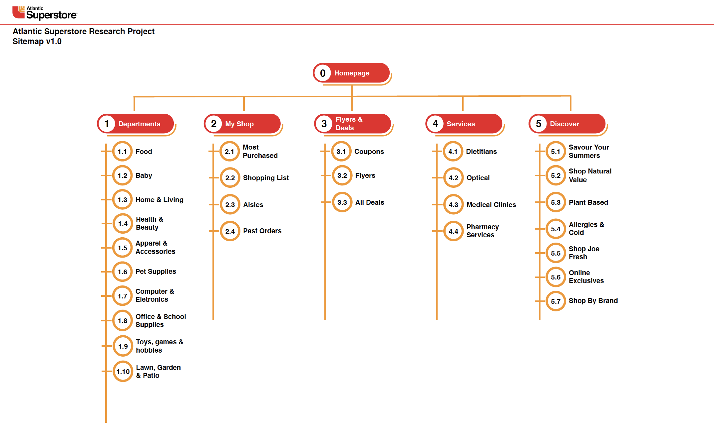
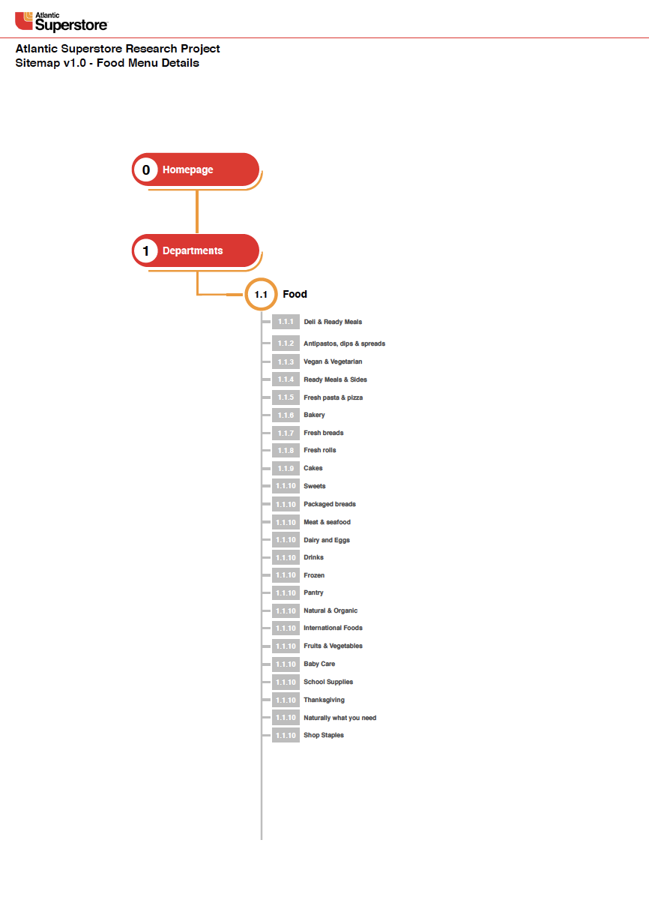
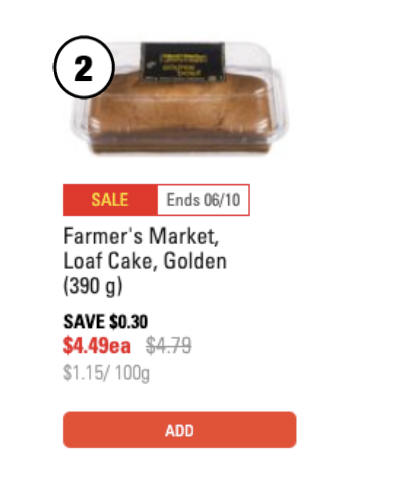
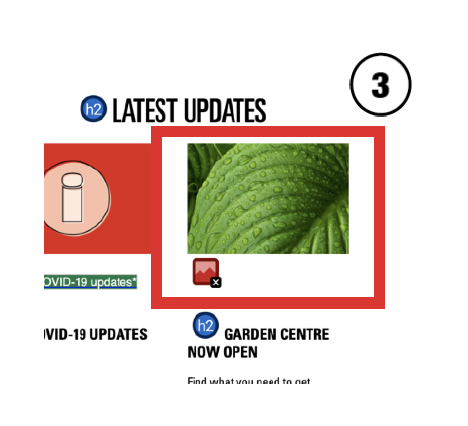

DISCLAIMER: This Research Report was made as one of the projects of
the UX Design Course for the Juno College of Technology, and has no
relation to the brand mentioned.

Priscila Mattos | UX Designer |
June 2020
INTRODUCTION
Atlantic Superstore is a chain of supermarkets operating in Nova Scotia,
as well as in Prince Edward Island and New Brunswick. Currently,
Atlantic Superstore is still owned by Loblaw Companies, through George
Weston Ltd.
Atlantic Superstore® offers a variety of food and ensures that the
grocery items you’re looking for are available. Customers can order
easily from the comforts of their home or office and choose between pick
up or delivery at an affordable cost.
OBJECTIVES
The main objective of this research is to analyze, critique, and
redesign a functional User Experience Flow, understanding what are the
user needs and concerns when shopping on the Atlantic Superstore
website. It may include, but not limited, the following ideas:
Possibilities/alternatives to make easier to find products for people
with dietary restrictions;
User’s routine and the way it is related to grocery shopping;
How much bad design can affect the user experience.
METHODOLOGY
Participants were recruited through friends, family, and personal
connections. A link to a Google Form questionnaire including 14
questions based on shopping experiences was sent by e-mail to seven
participants who are already engaged in online grocery shopping. They
were be able to answer the questionnaire using their desktop or mobile
device at home.

KEY QUESTIONS
- Have you ordered groceries online before? Y/N
- If yes, did you order using a desktop or mobile device?
-
If no, what would you make you start buying groceries online?
- a. No delivery fee
- b. Same day delivery
- c. Monthly subscription
-
Which option do you believe is more relevant when buying groceries
online?
- a. Product specification (calories, ingredients, etc)
- b. Discount when buying more than one of the same item
- c. Reviews from other customers
- What is the hardest part of buying groceries online?
- Have you ever paid for express delivery before? Y/N
-
When you are navigating on the Atlantic Superstore website, how do you
feel about the way that the menu options are arranged on screen?
-
When you are navigating on the Atlantic Superstore website, how do you
feel about the way that the products are presented on screen?
-
How would you go about proceeding to check out and paying for your
order?
- What was the hardest task to accomplish?
- Was the interface easy to understand?
- Could you about one thing you liked the most about the design?
-
Please talk about one thing you disliked the most about the design.
-
And if you could change one thing about the design, what would it be?


INSIGHTS
-
All participants were familiar with the process of online shopping,
and most of them prefer to do it in a Desktop instead of a mobile
device.
-
The main concerns involve the home page, top navigation menu, and
readability. Some participants felt confused with repeated or
unnecessary information. The excess of promo banners was also
mentioned.
-
All participants demonstrated not being completely comfortable with
the checkout process (it could have fewer page changes, selection of
the store and delivery time) and the difficulty of finding information
about the procedure to change a placed order.
-
Participants mentioned that if the feature of reviews could be
included, it would make the shopping experience more pleasant.
SITE MAP


ACCESSIBILITY/USABILITY ISSUES
Some errors were found on the website during the
usability/accessibility evaluation, mostly related to contrast issues
between foreground and background:




The contrast between the black colour used on the background and the
text colour in grey makes the content unreadable.

There are two issues in this section: the sale icon in red and
yellow, and the thin font-style and colour of Price/g could be
difficult to understand for those who are visually impaired.

Missing the ALT attribute in some images.
CONCLUSION
The Atlantic Superstore customers are looking for direct information
and don’t like to spend time researching due to the following reasons:
-
Users work or study full-time and want to save time to spend with
family and friends, so online shopping is a perfect solution;
-
They’re looking for a service that can exceed their expectations
about delivery and if the photos demonstrate the real essence of the
products that they will receive at home.
In this research was possible to understand that the website has some
issues that need to be solved:
-
Not all users are comfortable with the flow of some processes i.e.
checkout.
-
The layout needs to be redesigned to provide better
usability/accessibility experiences: better buttons and
re-arrangement of the Menu are the key factors.